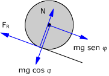
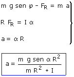
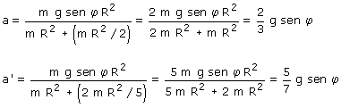

a)
La única fuerza útil es m·g·sen φ, por tanto el cuerpo bajará por la rampa
Además el cuerpo girará en el sentido de las agujas del reloj
La fuerza de rozamiento es indeterminada y tiene sentido contrario a m·g·sen φ
 |
Traslación del c.d.m:
|
A efectos de traslación se puede considerar que todas las fuerzas exteriores están aplicadas en el c.d.m |
| Rotación alrededor del c.d.m:
Relación entre traslación y rotación:
|
||

Combinando las expresiones anteriores resulta un sistema con tres incógnitas: a, α , FR

Sustituyendo el momento de inercia de cilindro y esfera:

La aceleración de traslación de la esfera es mayor por tanto ésta llegará antes